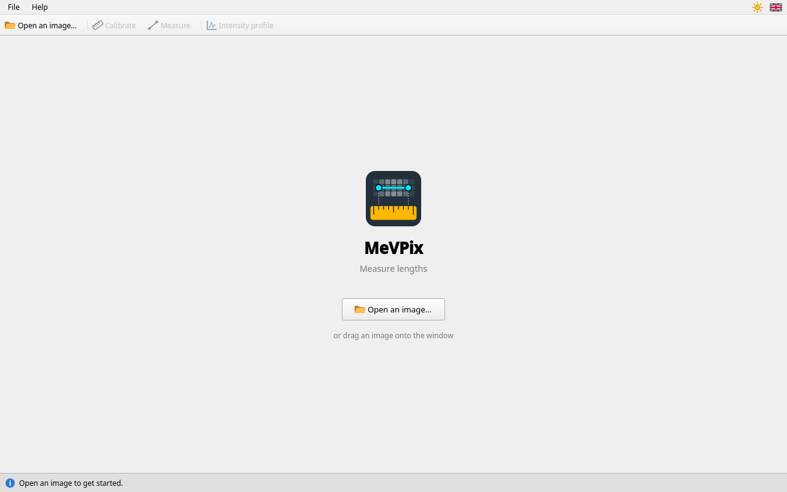
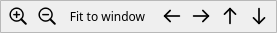
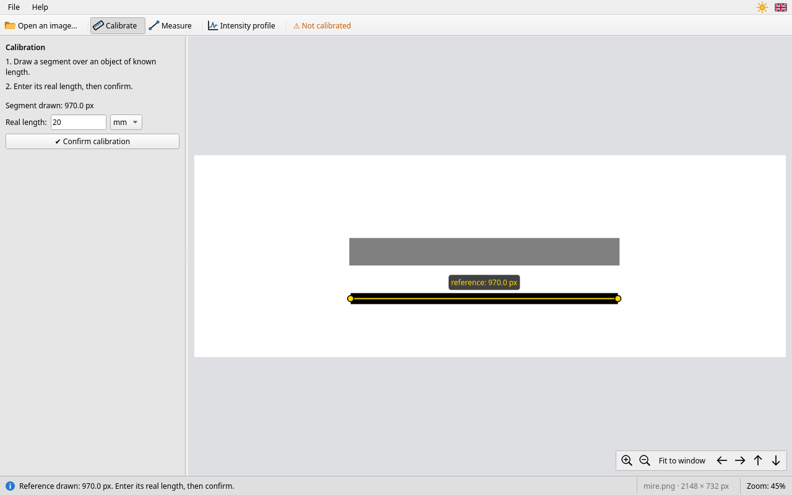
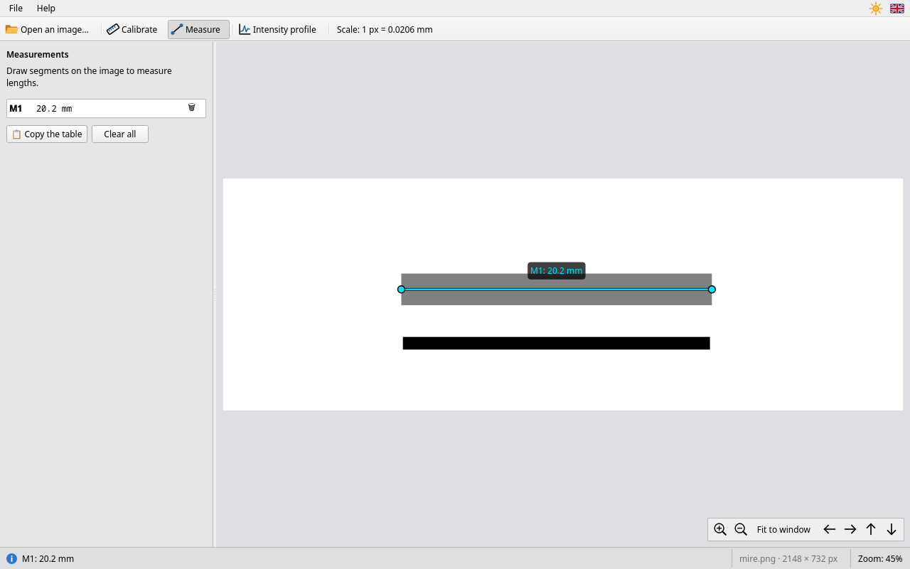
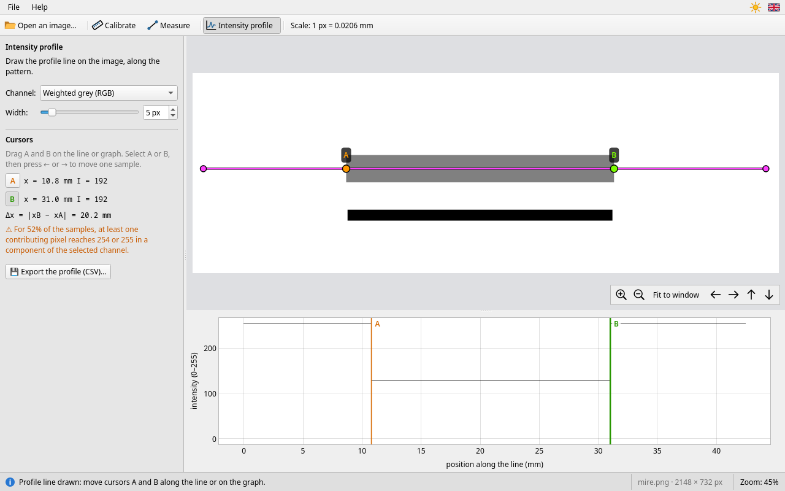
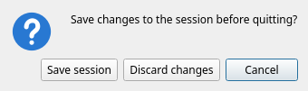
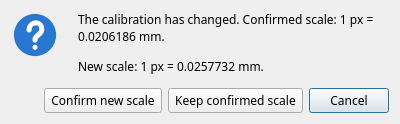
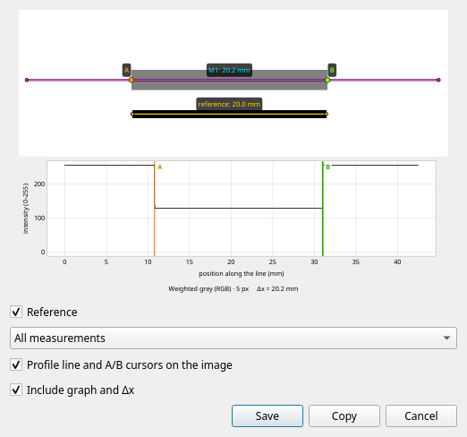

MeVPix — User guide
Measure lengths and read an intensity profile on an image · version {{version}}
Open an image or a session
For a first class practical, try measuring a washer or analysing Young’s fringes.
To work on your own photo, click
Open an image…, press Ctrl+O or drop a file onto the window.
These commands open both images and .mevpix sessions.
- An image opens with the Calibrate tool selected and the real length field empty. You can also go straight to Measure or Intensity profile and work in pixels.
- A session restores the image, tool, calibration, measurements and profile line
you saved. The
.mevpixfile contains everything you need to resume on another computer.
Image formats available on this computer
{{formats}}
This list comes from the image readers installed with Qt. Support for HEIC and HEIF depends on those readers. MeVPix applies the orientation recorded in the photo.
Click any screenshot to open it at its original size.


Two practicals with images
Both images come with this guide. Save the PNG for your practical, then open it in MeVPix.
Each pair of students can save their points in a .mevpix file and compare their
results with those of another pair.
Measure the diameters of a washer
Download the washer image (PNG)

- In Calibrate, join the centres of the two vertical ticks at the ends of the white scale bar in the lower left. Enter 20, choose mm and confirm. The bar spans about 300 px, giving a scale of about 0.067 mm per pixel.
- In Measure, draw the outer diameter through the centre, then measure the diameter of the hole. Expect about 30 mm and 12 mm respectively. A chord that misses the centre gives a smaller value.
- Repeat in another direction. Compare the results and discuss which edge of the bevel you picked. Use Copy the table to collect the class measurements.
Measure fringe spacing in Young’s double-slit experiment
Download the two exposures of the fringes (PNG)

- Calibrate using the 10 mm bar below the reference exposure on the left. Select Intensity profile and draw a horizontal line through the centres of the bright spots in that exposure. Hold Shift to keep the line horizontal.
- Identify the central maximum. Put A on the second maximum to its left and B on the second to its right. The separation spans four fringe spacings. Divide Δx by four. The peaks in the image are about 6.1 mm apart, giving a fringe spacing of about 1.5 mm.
- Compare this with the theoretical spacing in the focal plane, i = λf/a. For λ = 632.8 nm, f = 1.000 m and slit separation a = 400 µm, the result is 1.58 mm. Save the session before drawing a new profile line across the long exposure on the right. Look for flat-topped peaks and the saturation warning.
The window and image zoom
Use the toolbar to open a file, select Calibrate, Measure or Intensity profile, and read the current scale. The left panel shows the controls and results for the selected tool. Its lines appear on the image. Switching tools preserves the lines drawn with the other tools.


Zoom and pan the image
The zoom and pan controls sit in the bottom-right corner of the image, above the graph when it is open. The + and − magnifiers zoom in and out around the centre of the view. Fit to window centres the whole image.


To zoom in on a detail, place the pointer over it and turn the wheel. Pinch to zoom on a trackpad that supports the gesture. To pan, drag with the right or middle mouse button. Zooming makes points easier to place. Lengths and profiles always use the coordinates of the original photo.
The status bar shows the result of the last action on the left and the image name, dimensions and zoom on the right. The sun or moon and the flag to the right of the menus change the theme and language. To enlarge the text and buttons throughout the interface, press Ctrl++.
Calibrate and measure
When taking a photograph in the lab, put a ruler or scale in the same plane as the object and photograph that plane head-on. MeVPix applies one scale to the whole photo. A ruler closer to the camera or a strongly tilted object will bias the lengths. Choose two widely separated marks to reduce the effect of a small error when placing the reference points.
- Select Calibrate. On the image, drag with the left mouse button from one end of a known length to the other. The reference appears in yellow. Hold Shift to draw horizontally or vertically.
- In Real length, enter a positive number. A decimal point or comma works. Choose µm, mm, cm or m. Click Confirm calibration or press Enter in the length field. The toolbar shows the length of one pixel and MeVPix switches to Measure.
- Draw the lengths you want to measure. Each turquoise segment gets a number (M1, M2…) and a row in the table. Lengths are in px until you confirm a scale. Confirming a scale also updates measurements you have already drawn. Scroll the table to see measurements beyond the first twelve.
The calculation uses the ratio of the two lengths in pixels. If 100 px represent 20 mm, the scale is 20/100 = 0.20 mm per pixel, so a 75 px line measures 15 mm. To estimate measurement uncertainty, consider the reference, point placement and camera geometry. The displayed decimal places reflect the rounding used for the calculation.


Start a new line on the photo. If the pointer leaves the photo while you draw, the end of the line stops at the edge. If you drag a handle to within one image pixel of the other end and release it, the line returns to its starting position.
To correct a line, select its tool and drag an end handle. During a drag, Esc restores the starting position or cancels the new line. Click the bin on a row to remove its measurement. With the keyboard, move to the bin cell and press Space or Enter. Clear all empties the measurements table.


After releasing the mouse, Ctrl+Z undoes one change at a time, including moving a line, confirming a scale, editing a profile or clearing the table. The history holds up to 100 changes. Opening a file starts a new history.
Read an intensity profile
Select Intensity profile. The graph appears below the image. Drag with the left mouse button to draw a line. Hold Shift for a horizontal or vertical line. The start of the line sets the origin of the horizontal axis. Drawing a new line replaces the old one and places A a quarter of the way along and B three quarters of the way along. Click the tool again to return to Measure.
If an older session opens with overlapping line ends, drag one end at least one image pixel away from the other to restore the graph and CSV export.
Place cursors A and B
On the image, drag the orange A or green B marker along the pink line. On the graph, click or drag to move the cursor nearest to the pointer along the horizontal axis. To move a specific cursor one sample at a time, click A or B in the panel, then press ← or →. When the graph has keyboard focus, the A and B keys also select the cursor.
The panel gives the position x and intensity I for each cursor, and their separation Δx = |xB − xA|, in pixels or in the calibrated unit. Hover over the graph to read the intensity on the curve at the pointer’s horizontal position.


Choose a channel and a band width
The vertical coordinate I is a digital level from 0 to 255. Select Red, Green or Blue to read that component. Weighted grey (RGB) calculates 0.299 R + 0.587 G + 0.114 B from the encoded image values. To relate these levels to illuminance or optical power, you need to know the camera response and how the picture was processed.
The Width, from 1 to 50 px, sets how many points to average perpendicular to the line. For straight fringes, widening the band reduces noise if peaks occur at the same positions across its width. Too wide a band mixes neighbouring features. The profile includes both ends and about one sample per pixel, using bilinear interpolation. At an edge MeVPix uses the available points and reports truncated bands.
If the decoder supplies more than 8 bits per component, the status bar shows the conversion, for instance 16 → 8 bits. Both the profile and the image saved in the session use the converted values. The saturation percentage counts samples to which at least one pixel with a value of 254 or 255 in the selected channel contributes. For weighted grey, a saturated pixel in any colour channel counts. A sample can therefore be flagged even when its mean is below 254. To compare peak heights, choose an exposure that keeps the channel of interest below this threshold.
Examine part of the graph
Turn the wheel to zoom in or out on the horizontal axis around the pointer. Shift+wheel pans horizontally. Double-click to restore the full graph and keep A, B and Δx in place. When several samples fall in the same screen column, the graph preserves their minimum and maximum values.
Save and resume a session
When collecting work, ask for the .mevpix file if you want to review students’
point placement. When distributing a prepared session, have each pair open it and save it under
their own name first. For work on camera response, also keep the original file at its acquisition bit depth.
Choose File › Save session or press Ctrl+S. The first time
you save work on an image, choose a filename and folder for the .mevpix file. Its name
appears in the window title. Subsequent saves write to this file. To work on a copy, choose
File › Save session as…. The copy becomes the current session.
You can keep measuring while the file is being written. If you draw another measurement after clicking Save, the asterisk stays in the title. Press Ctrl+S again to include that measurement in the file.
If another window has saved the same session, choose Save a copy… and pick a different name to keep both versions. Cancel takes you back to your work. If a save is already in progress, you can also try again in a moment.
A session contains the full-resolution working image, the reference line, the length and unit you entered, the confirmed scale, the measurements and the selected tool. It also stores the profile line, channel, width and positions of A and B. On reopening, the image fits the window and the graph shows the entire profile.
An asterisk in the window title marks unsaved changes. Zooming, panning and switching tools leave the saved state intact. If you close the window or open another file with changes pending, Save session saves your work and continues, Discard changes continues without saving, and Cancel returns to your work. If you cancel the save or it fails, the session stays open.


Copy and export results
| What you want to share | Output to choose |
|---|---|
| Work to resume in the next lesson | A .mevpix session with the photo and editable lines |
| Lengths M1, M2… for a spreadsheet | Copy the table |
| Numerical data for analysing the profile | Profile as CSV |
| A labelled figure for a lab report | Annotated image as a PNG or on the clipboard |
Which scale will be used? If you change the reference, length or unit after confirming a scale, a ⚠ symbol appears beside it. Before copying the table, exporting a CSV or composing an annotated image, MeVPix shows the confirmed scale and, if the input is valid, the new one. Confirm new scale applies it to the session and the output. Keep confirmed scale uses the previous scale and leaves the edit pending. Cancel stops the operation. If the input is invalid, the confirmed scale is still available.


Paste the measurements table
In Measure, click Copy the table, then paste into a spreadsheet
or document with Ctrl+V. A tab separates the two columns. The first,
Measurement, contains M1, M2… The second gives the Length in
the unit shown in its heading, such as Length (px) or Length (mm).
Numbers use a decimal point in English and a decimal comma in French.
Save profile values as CSV
In Intensity profile, click Export the profile (CSV)…. The file
contains every sample from end to end, at any graph zoom or A–B interval. The first column gives
the position x in the unit shown in the heading. The second, I, gives the
intensity to two decimal places.
| MeVPix language | Suggested name | Column separator | Decimal separator |
|---|---|---|---|
| English | profile.csv | Comma | Point |
| French | profil.csv | Semicolon | Comma |
MeVPix adds .csv if you enter a name without an extension and asks before
replacing an existing file. You can import the CSV into MeVReg or a spreadsheet. This code reads
an English export with pandas.
import pandas as pd
profile = pd.read_csv("profile.csv")
profile.plot(x=profile.columns[0], y="I")Copy or save an annotated image
Choose File › Annotated image…. Include all measurements, a single one by number, or none. The Reference checkbox is available when the drawn reference matches the pixel length used for calibration. If a profile line exists, select Profile line and A/B cursors on the image to overlay it. Independently, Include graph and Δx adds the full profile below the image, with axes, cursors and a legend giving the channel, width and Δx.
Check the preview, then choose Copy for the clipboard or Save
for a PNG. Both outputs use the same composition and preserve the photo’s resolution regardless of
the on-screen zoom. Both preserve the photo’s colour profile when one is present.
The suggested name ends in -MeVPix.png. The annotations become part
of the PNG pixels. Keep the .mevpix
session to edit the lines later.


Mouse and keyboard
| Action | Control |
|---|---|
| Open an image or a session | Ctrl+O or drag and drop a file |
| Save the session | Ctrl+S |
| Save under a new name | File › Save session as… (Ctrl+Shift+S where shown in the menu) |
| Draw a line or move an end handle | Drag with the left button. Hold Shift for a horizontal or vertical line |
| Confirm calibration | Enter in the length field |
| Cancel the current drag | Esc |
| Undo the last edit | Ctrl+Z. While typing in the length field, this undoes text edits |
| Zoom the image or restore the whole view | + and − magnifiers or wheel. Fit to window shows the whole image |
| Pan the image | Click an arrow beside the magnifiers or drag with the right or middle mouse button |
| Move a cursor by one sample | On the graph, A or B, then ← or → |
| Navigate the graph | Wheel to zoom, Shift+wheel to pan, double-click to restore the full graph |
| Resize text and buttons | Ctrl++ or Ctrl+−. Ctrl+0 restores normal size |
| Open this guide | F1 or Help › User guide… |
Troubleshooting
- All my measurements in mm are too large by the same factor.
- Check the unit selected for the reference, then measure a second known length in the same plane. A factor of ten may indicate a mix-up between cm and mm. If the error varies across the photo, check the ruler orientation and camera perspective.
- A fringe has a flat-topped intensity peak.
- Check the saturation message for the selected channel. Try a shorter exposure and repeat the same profile line. Compare the two exposures in the fringe practical.
- MeVPix reports an unknown image format.
- Expand the list of formats available on this computer. It also appears when you hover over the error message. If the format is missing, open a copy converted to PNG or JPEG. If a file fails to open, your current work stays in place.
- MeVPix reports an incomplete or damaged JPEG.
- Copy the photo from its original device or folder again. Wait for the transfer to finish before opening the copy. Your current measurements stay on screen.
- “Confirm calibration” is greyed out, or lengths are still in px.
- Draw a reference at least one image pixel long. Enter only its positive length in the field and select the unit from the list. Confirm to convert existing measurements.
- I switched tools and can no longer see a measurement or the profile line.
- Return to Measure for segments M1, M2… or Intensity profile for the profile line. If the graph is empty, draw a line on the image with this tool.
- The wheel zooms the graph when I want to zoom the photo.
- Move the pointer over the image or use the magnifiers in its bottom-right corner. To reset the text size throughout the interface, press Ctrl+0.
- The scale appears in orange with a ⚠ symbol.
- The current input differs from the calibration used for measurements. Return to Calibrate to check it. You can also choose the scale when exporting.
- The whole CSV appears in one column.
- Choose the column separator for the language in use when you exported the file. See the table under Save profile values as CSV.
- MeVPix could not save my session.
- The status bar identifies the file. Choose File › Save session as… and select a folder where you have write access.
Install MeVPix
Windows x64 and Linux x86_64 packages are available on the MevSuite releases page.
- Windows portable version. Extract
MeVPix-windows-x64.zipand runmevpix.exe. Copy the entire folder to move the program. - Windows installer.
MeVPix-windows-x64-setup.exeinstalls for all users, by default inC:\Program Files\MeVSuite\MeVPix, and registers the.mevpixfile association. Find the shortcut in the MeVSuite folder in the Start menu. To uninstall, use Windows Settings. - Linux. Install the
.debpackage on Ubuntu or the.rpmon Fedora. To run the standalone.AppImage, make it executable and open it. The.deband.rpmpackages register the.mevpixfile type with the desktop.
Unattended deployment on Windows
Run this command with administrator rights from WAPT, a Group Policy or a deployment script.
MeVPix-windows-x64-setup.exe /VERYSILENT /SUPPRESSMSGBOXES /NORESTARTThis command uninstalls MeVPix from the default location.
"C:\Program Files\MeVSuite\MeVPix\unins000.exe" /VERYSILENT /SUPPRESSMSGBOXES /NORESTARTSettings
At first launch MeVPix uses the desktop theme and the first supported language in your system
preferences, falling back to English. The initial unit is mm, the channel is weighted grey and the band
width is 5 px. The mevpix.ini file keeps preferences between launches.
| System | Personal settings | Settings enforced at startup |
|---|---|---|
| Windows | %APPDATA%\MeVSuite\mevpix.ini | mevpix.ini next to mevpix.exe |
| Linux | $XDG_CONFIG_HOME/MeVSuite/mevpix.ini, normally ~/.config/MeVSuite/mevpix.ini | /etc/MeVSuite/mevpix.ini, or mevpix.ini next to the executable if that file is absent |
MeVPix reads personal settings first, then applies the keys from the enforced settings file.
It saves preference changes in the personal file. Help › About MeVPix… shows the
paths in use. Each line in a settings file takes the form key = value.
For example, to start each practical in English with a reference in millimetres and a greyscale profile averaged across five points, put these lines in the computer’s enforced settings file.
language = en
unit = mm
channel = luminance
band = 5These values initialise new work. Opening a saved session restores its unit, channel and band width.
| Key | Values |
|---|---|
language and theme | auto, fr, en for language. auto, light, dark for theme. |
unit and channel | um, mm, cm, m for unit. luminance, red, green, blue for channel. |
band and ui_zoom | Band width from 1 to 50 px. Interface scale from 0.5 to 3.0. The window width limits the scale that can be displayed. |
last_dir | Folder suggested by file dialogs. |
window_width, window_height and maximized | Width and height of the window at its normal size. true or false for the maximised state. |
Guide, contact and licence
F1 opens the guide in the current interface language in your browser. Both pages, their screenshots
and the two practical images are bundled with MeVPix and work offline. The program makes these
files available in mevpix-help in your personal cache. If the cache cannot be used,
it uses a private temporary folder. The status bar shows the path of the page it opened.
After a fatal error, the message gives the path to mevpix.log if the log could be
written. This file sits alongside your personal settings and describes the most recent fatal error.
When reporting a problem, include the version, operating system and action you took. Attach the log
if available.
Contact Rémi MEVAERE at suite@sciences-physiques.net. MeVPix is distributed under the MIT licence. Help › About MeVPix… lists its components and their licences. About Qt… identifies the Qt version and licence.